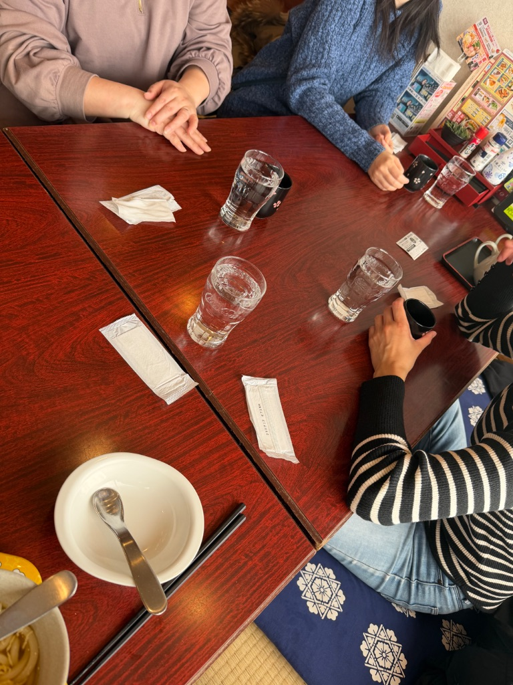

8年間ずっと一緒！事務さんたちとの夢庵ランチ🍚

※ 事務さんたちとのランチタイム
今日は、成瀬駅付近の夢庵で
事務さんたちと3人でお昼ご飯🍚
実はこの事務さんたち、
もう8年くらい？ずっと居てくれてます✨
👩💼 事務さんたちとの関係
会社を始めたばかりの頃から、
ずっと支えてくれてる事務さんたち。
経理や書類整理はもちろん、
私の愚痴を聞いてくれたり、
子育てのこと教えてもらったり…
もう、仕事仲間というより、家族みたいな存在です😊
8年間、ずっと一緒に頑張ってきました💪
忙しい時も、大変な時も、
いつも笑顔で支えてくれる事務さんたち。
この会社を続けてこれたのは、
みんなのおかげです✨
🍚 夢庵でのランチタイム

※ 3人でワイワイランチ
成瀬の夢庵って、
事務所から近くて、
よく3人でランチしに行くんです。
今日も、
お昼休みに「夢庵行きましょ〜」って
自然な流れで😊
💬 女子会トーク
ランチしながら、
仕事の話、プライベートの話、子育ての話…
「最近、長男が〇〇で…」
とか話すと、
「うちの子もそうだったよ〜」
って、先輩ママとしてアドバイスくれるんです。
こういう女子会の時間、
本当に楽しい😊
仕事の話だけじゃなくて、
プライベートのことも話せる関係って
すごく大事だなって思います✨
✨ ずっと変わらず仲良く
8年間、
忙しい時も、大変な時も、
ずっと一緒に頑張ってきました。
経理も書類も完璧にこなしてくれて、
私が現場のことに集中できるのは
事務さんたちのおかげです。
会社を続けてこれてるのは、
スタッフみんなのおかげだけど、
特に事務さんたちには、
8年間、本当にお世話になってます🙏
これからも、一緒に頑張っていきたいです💪
今日の夢庵ランチも楽しかった😊
また来週も、
「夢庵行きましょ〜」
って誘ってくれそう（笑）